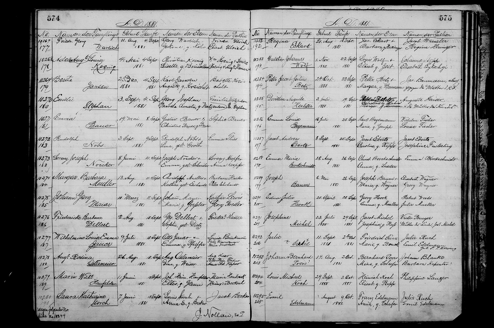

★ At a Glance
Charles's sister-in-law — Auguste's youngest sister, known in the family as Babette. She sponsored two of Charles and Auguste's children at baptism.
Researcher view (sources, citations, bottom-line)
Bertha Barbara "Babette" Kreichelt (1859–1892, St. Louis) was Auguste's youngest sister and the eighth and last child of Georg and Henriette. She sponsored two Gannsen baptisms — first as junior 13-year-old co-sponsor at the 1873 Louise baptism (recorded as "Barbara Kreichelt"), then as the single named sponsor at the 1880 Bertha Johnson baptism (recorded as "Babette") — the namesake aunt for Bertha Johnson. She died at age 32 in 1892 at St. James, Phelps County, Missouri, buried Holy Ghost Cemetery in St. Louis. The "Barbara/Babette = Bertha Barbara" reconciliation was confirmed via FS L5FH-BRP's documented Alternate Name "Babette" (May 2026).
Vital details
| Full name | Bertha Barbara Kreichelt |
| Connection to Charles | Auguste Kreichelt's sister · Charles Gannsen's sister-in-law |
| Sponsor role | Documented baptism sponsor in the Gannsen children series |
| Parents | Georg Andreas Kreichelt × Louise Friederike Henriette Weiss |
| Origin | Clausthal, Kingdom of Hannover (Kreichelt family seat) |
| FamilySearch profile | (see Kreichelt family records) |
Quick facts & name reconciliation
★ Name reconciliation · "Barbara" (1873) ≈ "Babette" (1880) ≈ Bertha Barbara Kreichelt
The 1873 St. Marcus baptism register records a sponsor named "Barbara Kreichelt". The 1880 St. Marcus baptism register records a sponsor named "Babette Kreichelt". Both refer to the same person — FamilySearch tree person L5FH-BRP — whose canonical name is Bertha Barbara Kreichelt with documented Alternate Name Babette:
- Babette ≈ Barbara. "Babette" is the standard German diminutive of "Barbara" (the same way "Bobby" is short for "Robert" in English). Both names refer to the same person; "Babette" was her family-circle call name.
- Bertha Barbara Kreichelt was Auguste's youngest sister — not a sister-in-law as previously assumed. Earlier transcriptions on this site mislabeled both the 1873 and 1880 sponsor entries as "sister-in-law"; the FamilySearch tree person LZKV-9F5's parent panel for Auguste's siblings now shows that Bertha Barbara is the eighth and last child of Georg and Henriette Kreichelt, born twelve years after Auguste herself.
She was 13 at the time of the 1873 Louise baptism (just barely old enough for German-Lutheran practice to permit standing as a junior co-sponsor with her mother), and 20 at the time of the 1880 Bertha baptism (at which point she would have been a fully-recognized adult sponsor).
| Canonical name | Bertha Barbara Kreichelt (FamilySearch tree person name) |
| Family call name | Babette (Alternate Name on the FamilySearch tree) |
| Recorded as | Barbara Kreichelt (1873 St. Marcus baptism · sponsor entry); Babette Kreichelt (1880 St. Marcus baptism · sponsor entry) |
| Born | 28 November 1859, St. Louis, Missouri, United States (2 sources) — first of the Kreichelt children to be born in America rather than Hannover |
| Died | 19 September 1892, St. James, Phelps County, Missouri, United States — aged 32 |
| Buried | 20 September 1892, Holy Ghost Cemetery, St. Louis, Missouri (alongside her brother August who had died in 1877) |
| Father | Georg Andreas Kreigelt (1819–1883) · LZXC-NH9 |
| Mother | Louise Friederike "Henriette" Weiss (1820–1894) · LZXC-NG7 |
| Position in birth order | Youngest of 8 Kreichelt children — youngest sister to August (1844), Charles (1846), Auguste (1847), Carl Wilhelm Christian Hermann (1849), Caroline (1851), Minerva (1853–1854), and Julius August (1855) |
| Age at the 1873 sponsorship | 13 years 4 months |
| Age at the 1880 sponsorship | 20 years 4 months — and the namesake aunt of the new Gannsen baby Bertha Johnson |
| Residences | 1860 St. Louis (2nd Ward, with the Kreichelt family) · 1870 St. Louis · later St. James, Phelps County, Missouri (where she died) |
| FamilySearch profile | L5FH-BRP · 13 attached sources · 10 memories |
Where this sponsor appears in the parish register
The 2 St. Marcus parish-register entries where this sponsor appears across the seven Gannsen baptisms.


Family tree — Kreichelt parents and siblings
The five primary Kreichelt children documented across St. Louis records. Per Carl's FamilySearch tree page, three additional siblings (the "Children-(8) panel") exist beyond these five — including Caroline Auguste Dorette Kreigelt and others not yet anchored to St. Louis evidence.
Connection to Charles Gannsen & the Gannsen baptisms
★ Sponsor at TWO Gannsen baptisms · 1873 Louise & 1880 Bertha
Bertha Barbara is one of only three sponsors who appear at more than one Gannsen baptism (the others being Friedrich Pillmann and Henriette Kreichelt):
- 1873 · Louise Gansen · recorded as "Barbara Kreichelt" — alongside her mother (Louise Henriette Kreichelt née Weis). Bertha Barbara was just 13.
- 1880 · Bertha Johnson · recorded as "Babette Kreichelt" — the only sponsor at this baptism. The Gannsen child Bertha is named directly after her aunt Bertha Barbara. The custom is the same as Erwin Carl Konsen → Erwin Spraul (1875): the child is named for the godparent.
Bertha Johnson (1880) is named directly for her aunt
The 1880 baptism is the third in the seven-baptism series where the child's name has a direct namesake-sponsor pairing (the others being Katherine Carolina after Catharina Albrecht in 1870, and Erwin Carl Konsen after Erwin Spraul in 1875). At this baptism the namesake is unusually clean: there is only ONE sponsor and the child's name matches hers exactly.
This made Bertha Barbara — at the time a 20-year-old unmarried young woman — the formal godparent and namesake of the seventh and last Gannsen child, who would live to 1959 (the longest-lived of the seven). Bertha Johnson's adult life is therefore a direct echo of her young aunt's name across nearly 80 years.
Tragic early death · 19 September 1892 · age 32
Bertha Barbara died young — at age 32 in St. James, Phelps County, Missouri (about 100 miles southwest of St. Louis), on 19 September 1892. The death location (Phelps County, not St. Louis) and her young age suggest she may have travelled or relocated to St. James for health reasons — the late-19th-c. Phelps County area had several "rest cure" or "health resort" type institutions for tuberculosis and other respiratory conditions. The cause of death has not been pulled from her death certificate.
She was buried at Holy Ghost Cemetery in St. Louis — the same cemetery where her elder brother August Kreichelt had been buried 15 years earlier in 1877. Her death predates her godchild Bertha Johnson's first child by some years (Bertha Johnson would have been 13 at her aunt's death). Bertha Barbara died unmarried and without recorded children.
📂 Full research log
Significance to the broader investigation
- The "youngest sister" pattern. Among Auguste's seven siblings, three of the four daughter-siblings appear as Gannsen baptism sponsors at some point: Caroline Auguste Dorette never sponsors, Minerva died in infancy, but the other two — herself (Bertha Barbara) and her elder sister Auguste — do. Auguste's choice to invite her youngest sister (more than her middle sister Caroline) reflects either personal closeness, an age-of-availability preference, or simple rotation — and the closeness echoes a familiar pattern of older-sister-mothering of younger siblings in immigrant families.
- The naming-after-sponsor convention is documented in three Gannsen baptisms. The "child named after sponsor" custom shows up at:
- 1870 Katherine Carolina ← Catharina Albrecht
- 1875 Erwin Carl Konsen ← Erwin Spraul
- 1880 Bertha Johnson ← Bertha Barbara Kreichelt
- Both Bertha Barbara and her brother August died young at the Holy Ghost Cemetery. The two siblings who appear most prominently as Gannsen sponsors (August at the 1872 baptism, Bertha Barbara at 1873 and 1880) both died in their early thirties (32 and 32 respectively) and were buried at the same St. Louis cemetery — Holy Ghost — separate from their parents' burial at Old Picker's Cemetery. This parallel might reflect a shared cause of death (TB, common in late-19th-c. St. Louis German immigrant communities) or simply a different parish allegiance for the next generation. The cause-of-death thread is open.
Sources & cross-references
- FamilySearch · Bertha Barbara Kreichelt (L5FH-BRP) · 13 sources
- St. Marcus baptism register · 1873 Louise entry · sponsor "Barbara Kreichelt"
- St. Marcus baptism register · 1880 Bertha entry · sponsor "Babette Kreichelt"
- Phelps County, Missouri death record, 19 September 1892
- Holy Ghost Cemetery burial records, 20 September 1892, St. Louis
- → 1873 Louise baptism page · → 1880 Bertha baptism page
- → Georg Kreichelt (her father) · → Henriette Kreichelt (her mother) · → August Kreichelt (her elder brother)